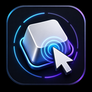

On-Screen Keyboard & Mouse-Click Visualizer — Always-On-Top Overlay for Linux/Wayland (COSMIC, sway, Hyprland, KDE Plasma, wlroots)
A screenkey alternative for Wayland — with mouse clicks.
repo: screenkey-wayland-alternative-with-mouse-clicksAn on-screen keyboard & mouse-click overlay for Linux screencasts — it stays reliably above your windows on Wayland (where a floating tool slips behind them), pinned where you want it, and never steals focus.
Side-by-side with the Wayland key visualizers people actually use.
The big difference: this one actually stays on top on Wayland. Tools like Show Me The Key float as a normal window and slip behind your other windows. Here's the full picture, honestly.
| On-Screen Keyboard & Mouse-Click Visualizer — Always-On-Top Overlay for Linux/Wayland (COSMIC, sway, Hyprland, KDE Plasma, wlroots) |
Show Me The Key | wshowkeys | screenkey | KeyCastr | |
|---|---|---|---|---|---|
| Native Wayland | ✓ | ✓ | ✓ | ✗X11 only | ✗macOS |
| Keyboard | ✓ | ✓ | ✓ | ✓ | ✓ |
| Mouse clicks | ✓ | ✓ | ✗keys only | ✗keys only | ✓ |
| Stays above your windows (Wayland) | ✓overlay layer | ✗drops behind | ✓ | ✗X11 only | ✗macOS |
| Position by % / per-monitor | ✓ | ⚠manual drag only | ⚠undocumented | ⚠basic only | ✓ |
| Manual hide-keys on recording | ✓ | ✓ | ✗ | ✗ | ✗ |
| Automatic hide-keys on recording | ✓ PROauto-detects password fields | ✗ | ✗ | ✗ | ✗ |
| Layout-aware (xkb) | ✓ | ✓ | ✓ | ✓ | ✗macOS — no xkb |
| Works on GNOME | ✗needs layer-shell | ✓ | ✗ | ✗X11 only | ✗macOS |
| Last build | Jul 2026 | Mar 2026 | ⚠2021 · unmaintained | ⚠Jan 2021 · stale | Nov 2025 |
⚠ This comparison was compiled with the help of AI and may contain mistakes — please verify for your own setup. PRO = optional paid add-on (see below).
Yes
- Actually stays above your windows on Wayland (overlay layer) — a normal floating tool like Show Me The Key slips behind them
- Position by percent, per monitor, zoom-independent (150% → 100%)
- Keyboard and mouse clicks in one bar, layout-aware
- Purpose-built and polished for Pop!_OS COSMIC
- Optional automatic password hiding — see PRO
No
- No GNOME support — we rely on
wlr-layer-shell(COSMIC, sway, Hyprland, KDE) - Show Me The Key is more portable and battle-tested
- No prebuilt packages yet — build from source for now
- Mouse clicks show as labels, not an animated cursor flash
Clear about where it works — and where it doesn't.
Always-on-top needs the wlr-layer-shell Wayland protocol. Here's exactly where you get it.
| Environment | Always-on-top overlay | Notes |
|---|---|---|
| Pop!_OS COSMIC | ✓ Works | Primary target. |
| sway | ✓ Works | wlroots-based. |
| Hyprland | ✓ Works | wlroots-based. |
| KDE Plasma (KWin) | ✓ Works | KWin implements wlr-layer-shell. |
| Wayfire · river · labwc | ✓ Works | wlroots-based. |
| GNOME (Mutter) | ✗ Doesn't stay on top | No wlr-layer-shell — the default on Ubuntu & Fedora Workstation. |
| X11 sessions | ⚠ Limited | Not the target; the overlay may not stay on top. |
⚠ Compiled with the help of AI — verify for your own setup.
A fixed, OBS-ready overlay — built for Wayland from the ground up.
Classic tools like screenkey are X11-only. This renders on the Wayland overlay layer, reads input straight from libinput, and pins itself where you want it.
Truly always-on-top
A gtk4-layer-shell overlay that stays above your windows — it won't slip behind them like a normal floating window does on Wayland. Click-through, never grabs focus.
Keys & mouse in one bar
Keystrokes and combos via xkbcommon (matching your layout), plus left / right / middle / side mouse clicks.
Any monitor, any zoom
Choose the display and position it by percentage, so it stays put across resolutions and fractional scaling.
Instant Hide-keys hotkey
A hotkey blanks the bar the moment you need privacy — for anything you don't want on camera.
Tune it live
Edge, margins, opacity, font size, timeout or always-on — all apply instantly from a clean settings window.
Report a bug in one click
A built-in button sends your note (and, only if you choose, a screenshot) to the maintainer — no account, no tracking.
Automatic password hiding.
The free app hides keys when you press the Hide-keys hotkey. PRO goes further: it detects password fields and masks keystrokes on its own, so you can log in on camera without touching a thing — something no other on-screen key tool does.
Password-field contents are never shown and never leave your machine. No background telemetry.
Get PRO — one-time $1 ↗Setup takes a minute: unzip, drop the .so in ~/.local/lib/keysclicks/, run the included activator once with your licence key. Masks native-app password fields out of the box. For browsers, start them with accessibility on so their password fields are exposed (no screen reader, no narration): Chrome / Chromium / Edge with --force-renderer-accessibility, Firefox with GNOME_ACCESSIBILITY=1.
Install it — download or build.
On Pop!_OS, Ubuntu & Debian, grab the ready-made package and double-click. Any other distro — build from source below.
Download & double-click .deb
Pop!_OS (COSMIC), Ubuntu & Debian — double-click the file, your software installer opens, press Install. First launch asks for your password once (the input reader needs libinput access).

Once it installs, open your Applications menu and launch this icon — On-Screen Keyboard & Mouse-Click Visualizer.Or build from source — any distro
# 1 · build dependencies (Fedora / Pop!_OS COSMIC shown — names vary by distro) sudo dnf install meson ninja-build gcc \ gtk4-devel libadwaita-devel gtk4-layer-shell-devel \ libxkbcommon-devel libevdev-devel json-glib-devel libcurl-devel # 2 · clone & build into ~/.local git clone https://github.com/VibeCodeBlogger-Public/screenkey-wayland-alternative-with-mouse-clicks-public.git kc cd kc && meson setup build --prefix ~/.local meson compile -C build && meson install -C build # 3 · run — the input reader asks for a password once (it reads libinput) keysclicks
On Debian/Ubuntu: libgtk-4-dev, libadwaita-1-dev, libgtk4-layer-shell-dev, libxkbcommon-dev, libevdev-dev, libjson-glib-dev, libcurl4-openssl-dev. Needs a compositor with wlr-layer-shell (COSMIC, sway, Hyprland, KDE Plasma).
keysclicks).
The Wayland key overlay you can record with.
Free and open source. Show your keys and clicks — pin it, and forget it's there.